Phase 1 · Quêtes dès l'inscription : maquettes (390x844, DPR2)
Contrat : 01-DESIGN-CONTRACT.md · Critique : 01-DESIGN-CRITIQUE.md
Variante avec contenu (pile : carte Phase 2, Mission du jour, Quêtes)
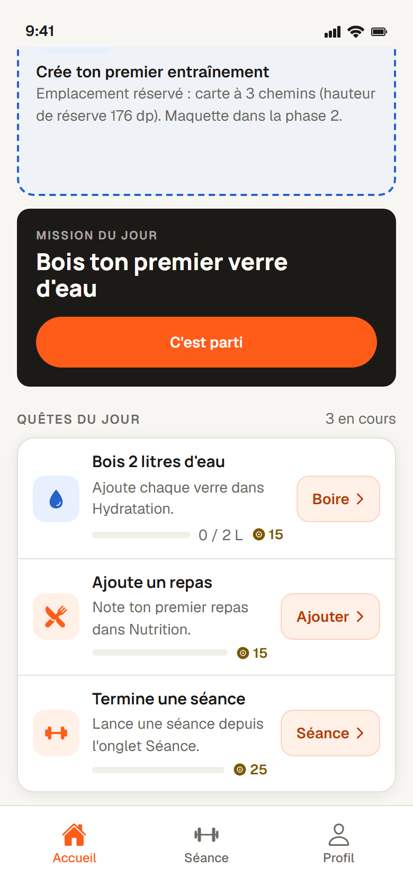
1 · Trois quêtes actives (compte neuf) — avec carte Phase 2 + Mission du jour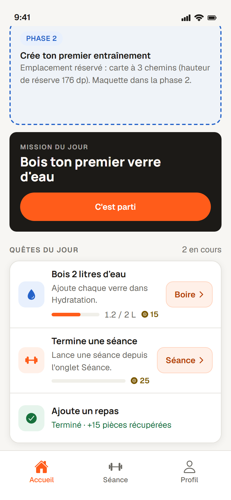
2 · Deux quêtes actives, une terminée plus tôt (1 / 3 faite) — avec carte Phase 2 + Mission du jour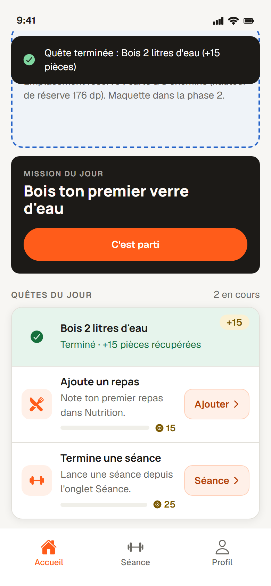
3 · Quête qui vient d'être terminée (célébration sobre + toast) — avec carte Phase 2 + Mission du jour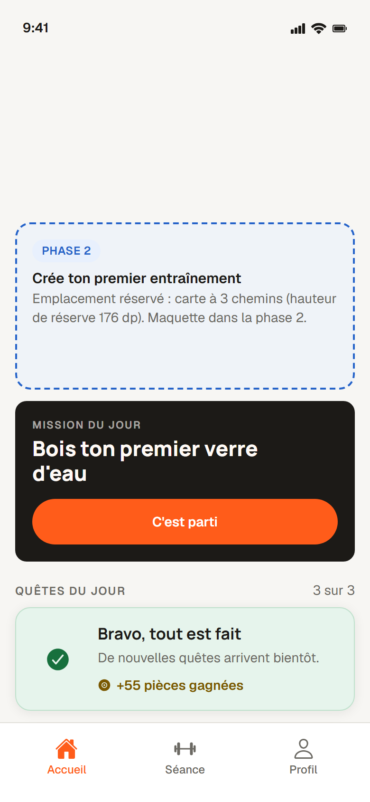
4 · Toutes les quêtes terminées — avec carte Phase 2 + Mission du jour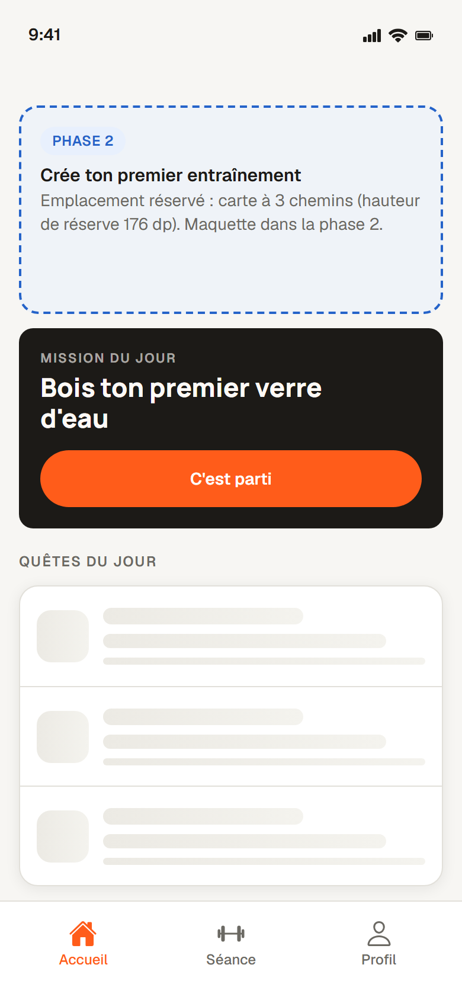
5 · Chargement (première lecture) — avec carte Phase 2 + Mission du jour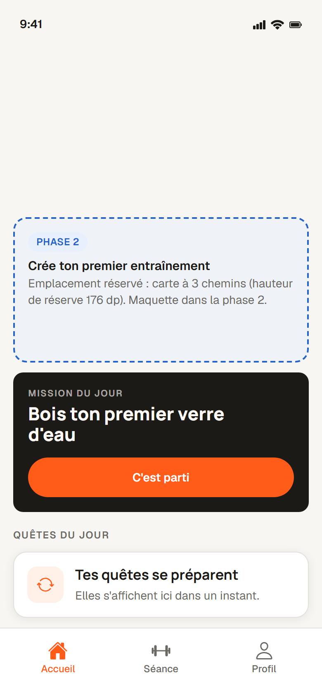
6 · Quêtes en cours de création (liste vide, synchro lancée) — avec carte Phase 2 + Mission du jour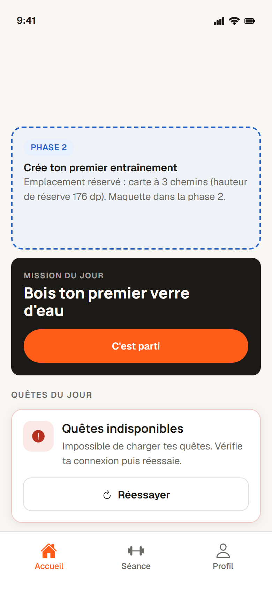
7 · Erreur avec réessai (le reste de l'accueil reste utilisable) — avec carte Phase 2 + Mission du jourVariante sans contenu autour (bloc Quêtes seul)
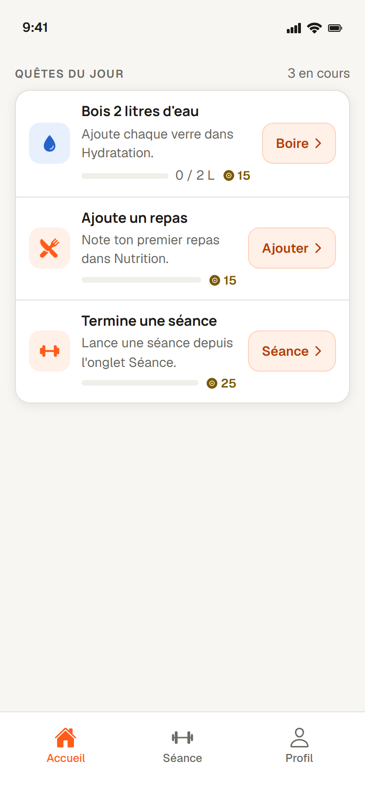
1 · Trois quêtes actives (compte neuf) — bloc Quêtes seul (ni carte Phase 2, ni Mission)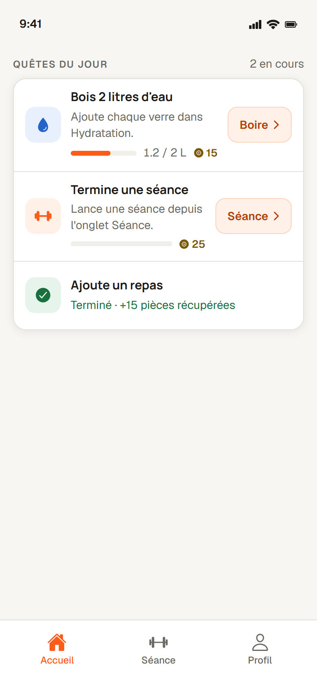
2 · Deux quêtes actives, une terminée plus tôt (1 / 3 faite) — bloc Quêtes seul (ni carte Phase 2, ni Mission)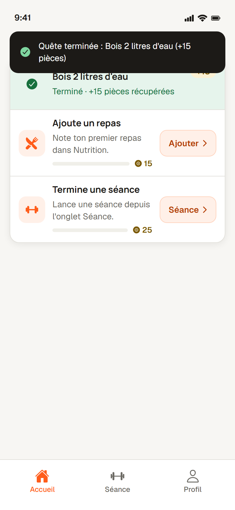
3 · Quête qui vient d'être terminée (célébration sobre + toast) — bloc Quêtes seul (ni carte Phase 2, ni Mission)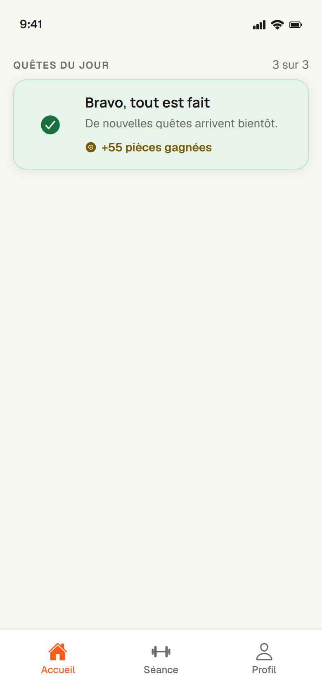
4 · Toutes les quêtes terminées — bloc Quêtes seul (ni carte Phase 2, ni Mission)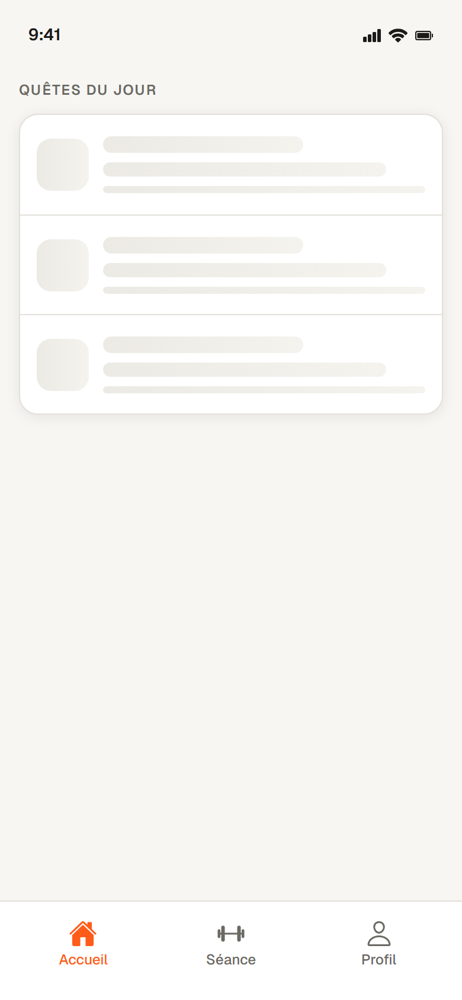
5 · Chargement (première lecture) — bloc Quêtes seul (ni carte Phase 2, ni Mission)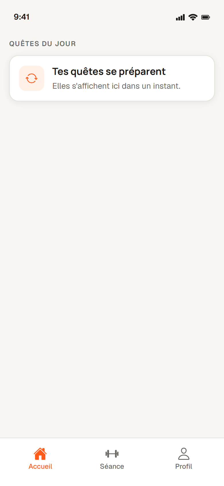
6 · Quêtes en cours de création (liste vide, synchro lancée) — bloc Quêtes seul (ni carte Phase 2, ni Mission)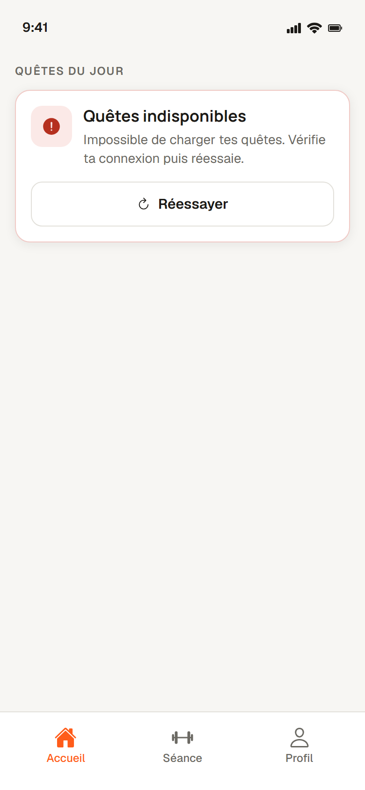
7 · Erreur avec réessai (le reste de l'accueil reste utilisable) — bloc Quêtes seul (ni carte Phase 2, ni Mission)